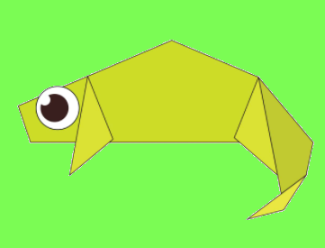

Chameleon is a reptile
Chameleon is a master in camouflaging
It can change its colour to blend in and can escape predators.
Origami is japanese for the art of paper folding. learning origami can get complicated.
So I have compiled few basic origami animals. The best method of learning origami is step by step instructions.
you can find camel,chameleon,penguin,panda,cicada,and many more! Just click on the picture to get the instructions.